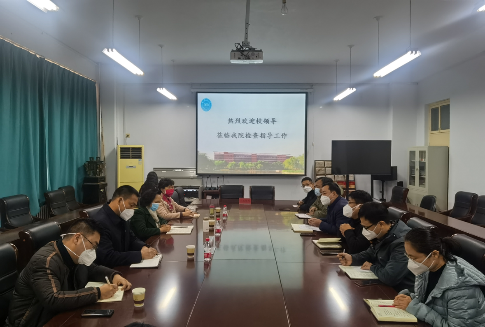

- 
尹新明首先详细阐释了党的二十大主题的内涵意义，指出“高举中国特色社会主义伟大旗帜,全面贯彻习近平新时代中国特色社会主义思想”是要郑重宣示,全党必须坚持以马克思主义中国化时代化最新成果为指导,坚定中国特色社会主义道路自信、理论自信、制度自信、文化自信,坚持道不变、志不改,强调“旗帜”和“思想”问题就是要亮明党的政治立场和指导思想,确保党和国家事业始终沿着正确方向胜利前进。“弘扬伟大建党精神”是要郑重宣示,全党必须恪守坚持真理、坚守理想,践行初心、担当使命,不怕牺牲、英勇斗争,对党忠诚、不负人民的伟大建党精神,保持党同人民群众的血肉联系,保持谦虚谨慎、艰苦奋斗的政治本色和敢于斗争、敢于胜利的意志品质,确保党始终成为中国特色社会主义事业的坚强领导核心。“自信自强、守正创新,踔厉奋发、勇毅前行”是要郑重宣示,全党必须保持自信果敢、自强不息的精神风貌,保持定力、勇于变革的工作态度,永不懈怠、锐意进取的奋斗姿态,使各项工作更好体现时代性、把握规律性、富于创造性。“全面建设社会主义现代化国家、全面推进中华民族伟大复兴”是要郑重宣示,全党必须紧紧扭住新时代新征程党的中心任务,集中一切力量,排除一切干扰,坚持以中国式现代化全面推进中华民族伟大复兴。
尹新明从“五个牢牢把握”的角度，重点阐释了党的二十大精神实质，指出党的二十大是在全党全国各族人民迈上全面建设社会主义现代化国家新征程、向第二个百年奋斗目标进军的关键时刻召开的一次十分重要的大会，是一次高举旗帜、凝聚力量、团结奋进的大会，宣示了中国共产党和中国人民在全面建设社会主义现代化国家新征程上举什么旗、走什么路、以什么样的精神状态、朝着什么样的目标继续前进的重大问题，对全面建设社会主义现代化国家、全面推进中华民族伟大复兴而团结奋斗，具有重大现实意义和深远历史意义
-
新乡学院位于河南省新乡市，是一所经教育部批准建立的公办全日制普通本科院校。学校始建于1949年，是一所具有红色革命基因、改革开放基因的学校。2007年由原新乡师范高等专科学校、平原大学、新乡市教育学院合并升格为本科院校，2014年通过教育部本科教学工作合格评估，2019年获批河南省硕士学位授予立项建设单位，2021年获批河南省示范性应用技术类型本科高校、国家语言文字推广基地、硕士学位授予重点立项培育单位，2022年获批联合培养硕士研究生资格。
三所院系合并
新乡师范高等专科学校 1949年5月，中国人民解放军新乡市军事管制委员会接管了“新乡县立临时联合中学”，7月更名为“太行公立新乡师范学校”，同时建立中共太行公立新乡师范学校党支部，同年开始招生。 1950年，校址由新乡县东关迁移到孟营北地。 1952年，平原省建制撤销，学校更名为河南省新乡师范学校。 1956年，开始举办初中教师训练班。 1958年，经上级批准升格为新乡师范专科学校。 1963年9月，恢复新乡师范学校的校名与建制。 “文化大革命”中，学校名称和隶属关系几经变化，1971年更名为新乡地区师范学校。 1977年，开始招收全国恢复高考后的统招生。 1984年，经河南省人民政府批准，恢复新乡师范专科学校校名和建制。 1992年，经教育部批准，更名为新乡师范高等专科学校.平原大学 新乡学院 1980年8月，经新乡地区行署、新乡市革命委员会同意，批准成立新乡师范学院分院，录取当年参加全国高考达到录取线的考生。 1980年12月，新乡市教师进修学院成立。 1981年8月，新乡师范学院分院更名为新乡市走读大学。同年10月，新乡市人民政府将新乡市走读大学与新乡市教师进修学院合并，隶属于新乡市教育局领导，校址设在新乡市南干道一中校门东侧。12月，迁至新乡市东郊骆驼湾附近。 1983年4月，新建办公楼竣工，学校于5月全部迁至新校园。 1984年5月，学校请示新乡市政府同意，将新乡市走读大学更名为新乡大学，同年12月，新乡市委、市政府决定在新乡市走读大学的基础上创办平原大学，隶属于新乡市政府领导，受省教育主管部门指导监督
新乡市教育学院 20世纪60年代初，利用新乡地区教育经费修建教育行政干校。 1980年12月，经河南省人民政府[1980]223号文件批准正式成立新乡地区教育学院。 1983年，学校开始招收函授班。 1986年7月，新乡地区教育学院更名为新乡市教育学院，校址位于新乡市文化街196号
- 历任领导班子：副校级调研员陈五海、党委委员 纪委书记 张少华、党委委员 副院长阎宏斌、党委委员 副院长吴中、党委副书记陈贞忠、党委副书记 院长杨宏志、党委书记陈兴民、党委副书记马国良、党委委员 副院长韩先喜、党委委员 副院长郭爱先、党委委员 副院长刘翔、党委委员 工会主席郜家顺、副校级调研员姚素珍
-
现任领导班子：（现任领导合照顺序从左至右）副校长张占祯、党委副书记杨士斌、副校长王选年、副校长吴中、党委副书记陈贞忠、党委书记丁庭选、党委副书记 校长刘兴友、党委副书记 工会主席阎宏斌、副校长刘翔、副校长陈业宏、纪委书记张宝林